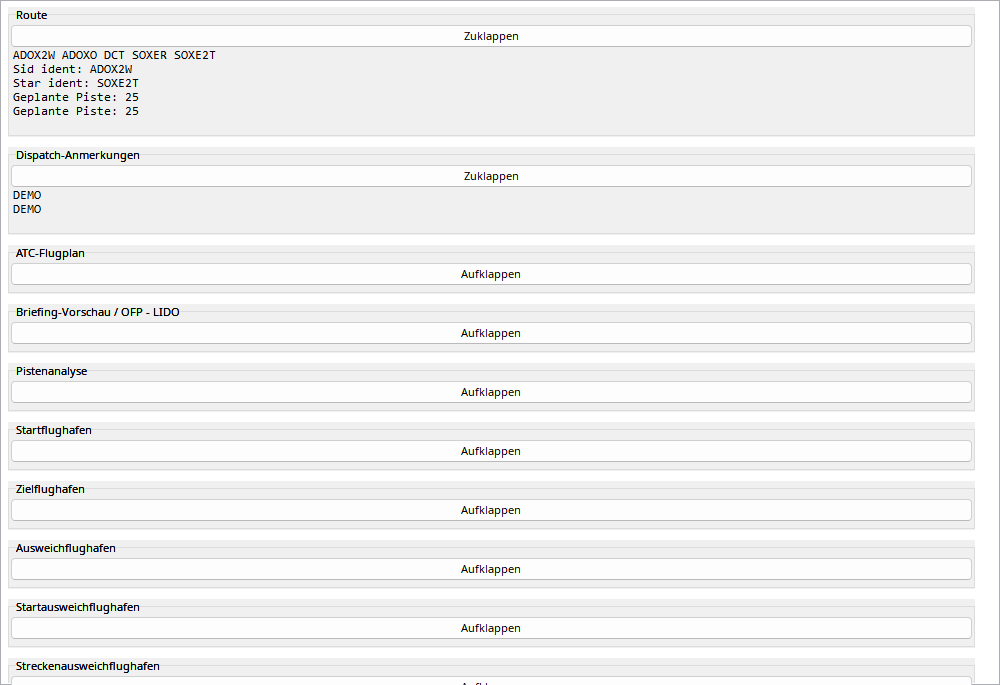
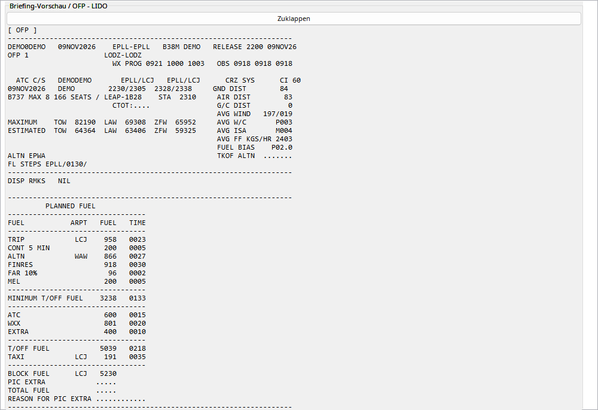

Das Handbuch verwendet einen anonymisierten EPLL–EPLL-Plan. Flugnummer/Kennzeichen sind Beispiele; Konto-, Crew- und persönliche Linkdaten fehlen. OFP-Werte sind Planung, keine Telemetriemessungen.
Öffnen Sie Abschnitte einzeln. Das Mausrad scrollt auch über dem OFP-Text. Karten werden als Bilder beim Flug gespeichert. Historische Pläne werden nicht bei VATSIM oder anderen Netzen eingereicht. Prüfen Sie vor Zuordnung Flughäfen, Flugzeug und Zeit.
Plan-/Briefingquelle, keine Messung. Import braucht Konto-ID und Netzwerk.
| Option / Aktion | Verhalten und Einschränkungen |
|---|---|
| Import | OFP laden; Flugzeug, Route und Planzeit vor Zuordnung prüfen. |
| OFP | Schreibgeschützter nativer Monospace-Text; Mausrad scrollt den Briefingcontainer auch über OFP-Text. |
| Karten | Heruntergeladen und mit der Aufnahme gespeichert, nicht nur GIF-Links; später ohne ursprüngliche URL nutzbar. |
| Vergleich | Geplante Masse/Kraftstoff/Wind sind keine Istwerte. Passender Plan kann EFB-Koordinatenpunkte bei AIRAC-Abweichung benennen. |
| Keine Einreichung | Historische OFPs werden nicht bei VATSIM/anderen Netzen eingereicht; keine entsprechende Aktion. |

